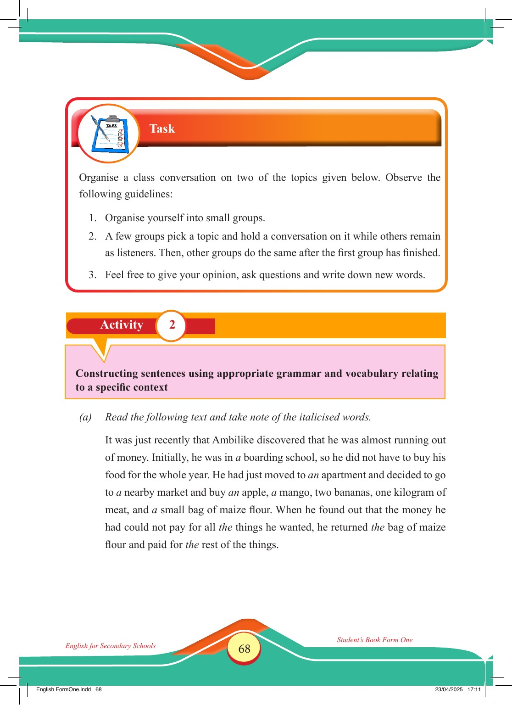

Accessible text transcript - page 68
Use the reader's read-aloud controls or select an individual segment below.
Printed book page 68. Task section heading with a clipboard checklist icon Task Organise a class conversation on two of the topics given below. Observe the following guidelines: 1. Organise yourself into small groups. 2. A few groups pick a topic and hold a conversation on it while others remain as listeners. Then, other groups do the same after the first group has finished. 3. Feel free to give your opinion, ask questions and write down new words. Activity 2: Constructing sentences using appropriate grammar and vocabulary relating to a specific context Activity 2 Constructing sentences using appropriate grammar and vocabulary relating to a specific context (a) Read the following text and take note of the italicised words. It was just recently that Ambilike discovered that he was almost running out of money. Initially, he was in a boarding school, so he did not have to buy his food for the whole year. He had just moved to an apartment and decided to go to a nearby market and buy an apple, a mango, two bananas, one kilogram of meat, and a small bag of maize flour. When he found out that the money he had could not pay for all the things he wanted, he returned the bag of maize flour and paid for the rest of the things. English for Secondary Schools Student’s Book Form One English FormOne.indd 68 23/04/2025 17:11 Return to the page image